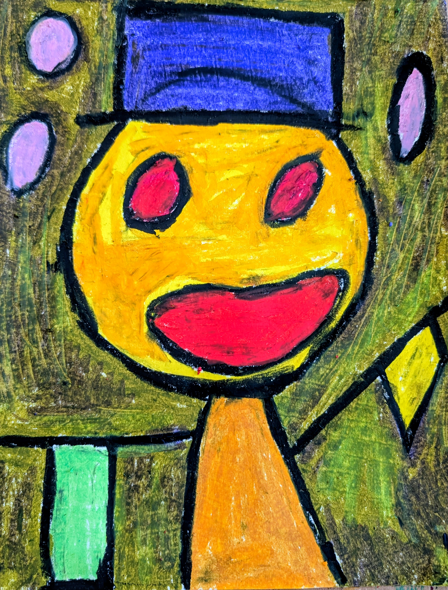

Open Mouth
Open Mouth shifts the tone of the series toward openness. The composition expands and the colors become more saturated.
The face feels animated without becoming expressive. The wide mouth suggests energy rather than emotion. The eyes remain fixed and impersonal.
Surrounding shapes introduce rhythm and movement. They activate the space without distracting from the central figure.
Gesture stays visible. The surface keeps its rawness. The image remains direct and unfiltered.
This work functions as a counterweight within the series. It introduces warmth and play while maintaining structural discipline.
Inquire to purchase